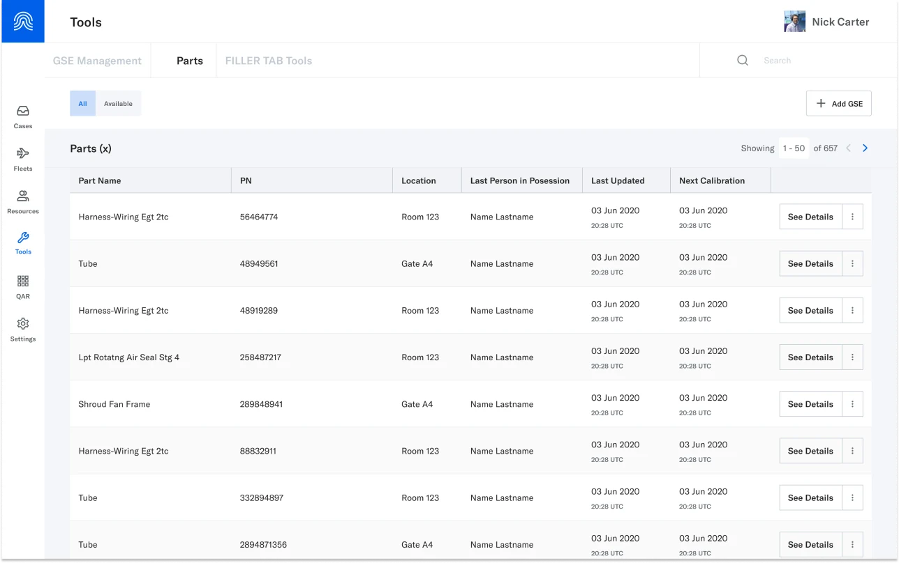
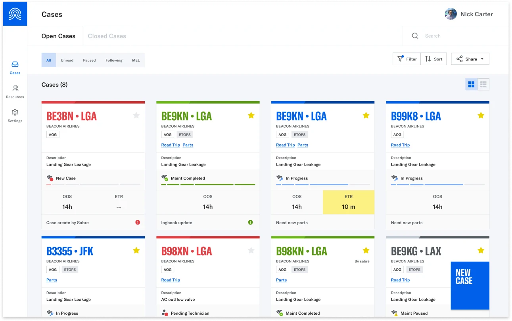
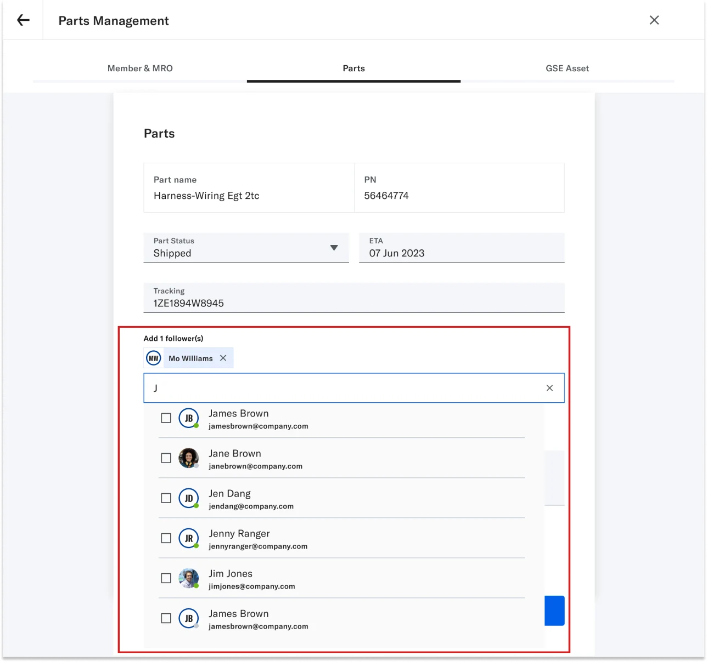
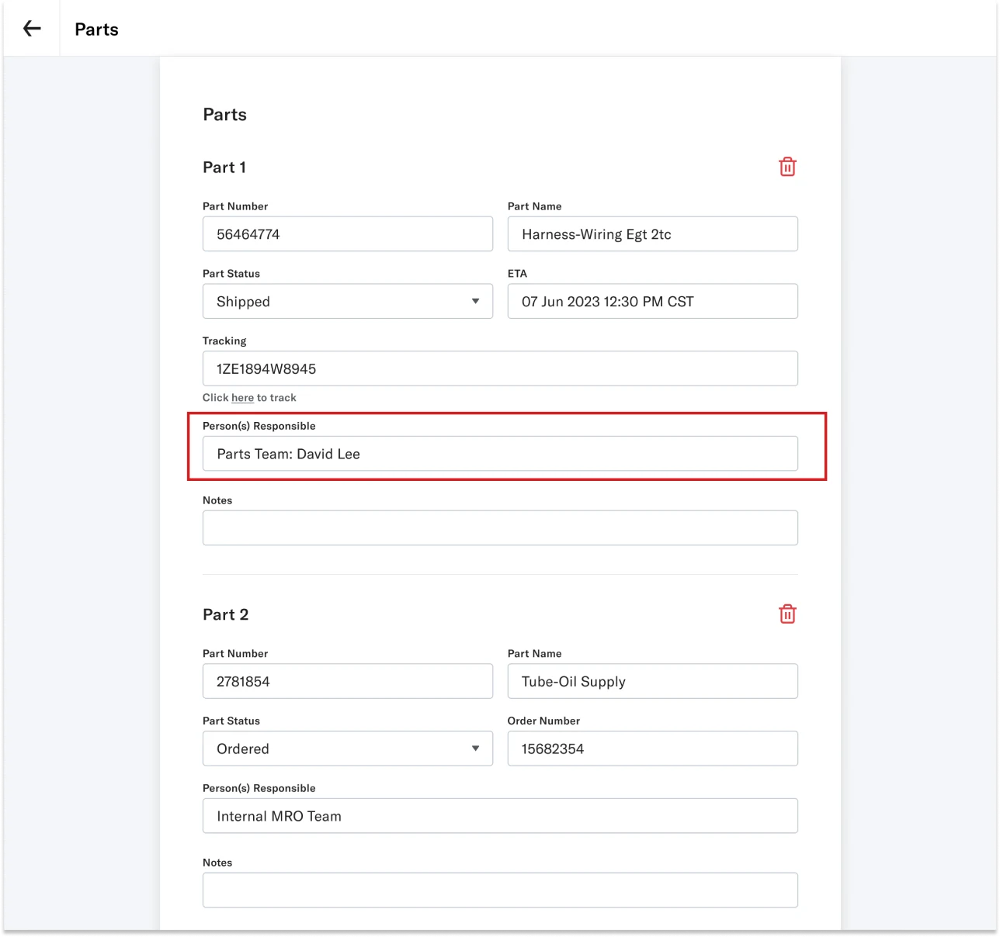
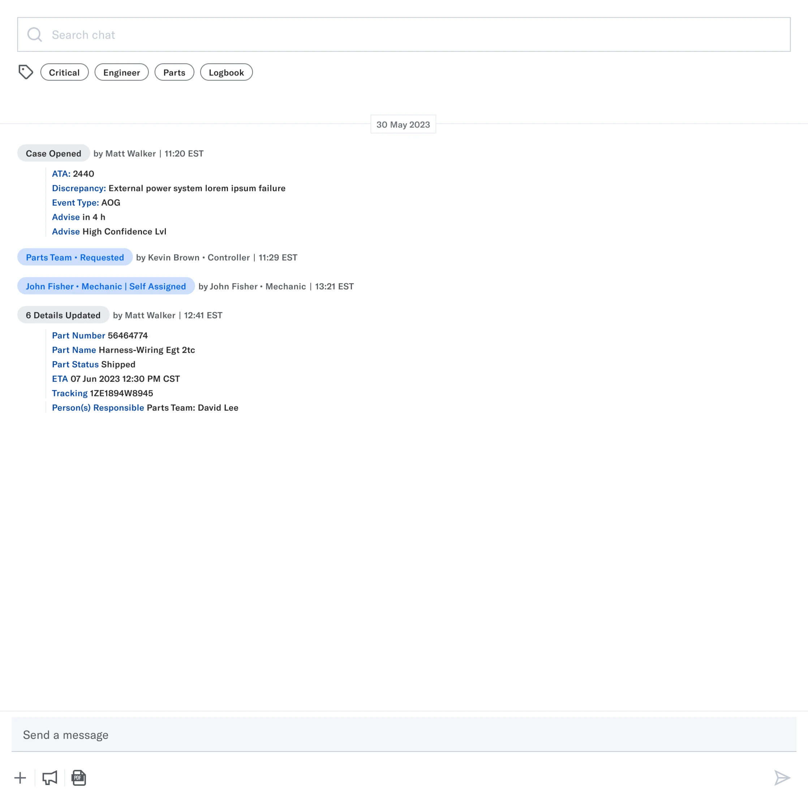
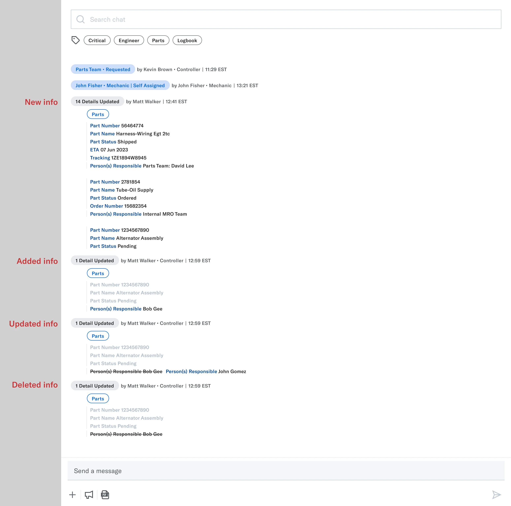

BEACON: PARTS
Helping aviation professionals manage parts requests to fix planes quickly so they can get back to flying


SUMMARY
Beacon is an aviation maintenance coordination and communication web app. Think of it as a “Slack + Ticketing System” for aviation professionals: it tracks aircraft repairs and improves communication to get planes back in service faster.
I led the design of Parts Management, helping materials teams, maintenance planners, and technicians track parts requests alongside the cases they support.
I explored solutions with Product and Engineering, gathered customer feedback, and refined status visibility, arrival information, and access to part details. The first release supported viewing, filtering, and managing case-linked parts requests.
The problem
Tracking a part meant piecing together updates from emails, calls, and systems like TRAX or AMOS. Teams needed to see which requests required attention and when parts were expected to arrive.

Existing customer research highlighted two recurring frustrations:
“I want to have all our parts requests visible in one place”
“Parts requests that were ordered to attend a specific case and join the stock, are not reserved for that case, being available to any other event, making it very difficult”
My focus was bringing that information into Beacon while keeping each request connected to its maintenance case.
Ideations & testing
I explored concepts with Product and Engineering, conducted four internal Sales sessions, and usability tested designs with customers.
I grouped the feedback into themes that informed the next iterations: make urgent requests stand out, surface arrival dates, and clarify how parts information should be managed.


Challenges & tradeoffs
The first release needed to make parts requests visible and manageable within maintenance cases. I worked with Product and Engineering to decide where additional complexity was worth the effort... and what could wait.
These decisions helped us narrow the scope.
1. Case context over a global list
We considered a standalone global parts list versus parts associated with cases. Customer feedback and team discussions led us to prioritize case-linked parts requests, keeping the repair context attached to the parts being tracked.
We left the broader standalone list out the first release.


2. Free text before locking in ownership
The PM proposed assigning a “Responsible Person” through mentions and notifications. But testing revealed confusion among customers and the team about what that responsibility actually meant.
We switched to free text so we could learn how teams used the field before committing to assignment rules. This preserved flexibility, but left structured ownership and notifications unresolved.


What I improved
Customer testing highlighted two priorities: spotting requests that needed attention and knowing when parts would arrive. I refined the status chips and arrival information to make both easier to see.
1. Urgent requests stand out
Customers wanted urgent requests to be easier to spot. I strengthened the visual emphasis of Pending and Delayed status chips while retaining their text labels.


2. Clearer timelines
Customer feedback highlighted the importance of seeing expected arrival dates at a glance. I added the ETA information to part details to support planning around outstanding requests.


What shipped
The first release let teams view, filter, and manage parts requests more efficiently with them linked to maintenance cases. Desktop views supported maintenance planners and materials teams, while tablet workflows supported technicians. The next step was to evaluate adoption and usability after launch.
Check it out below!
Visibility
Management
Future direction
I designed and proposed a couple enhancements beyond the first release.
1. Easier access to parts management
I proposed moving parts management from the case’s general edit controls into “Manage,” alongside people and ground-support equipment (GSE).
This would separate ongoing resource management from editing basic case details.
2. Clearer parts activity in chat
In the first release, parts additions, edits, and deletions used the generic “Detail Updated” tag due to engineering constraints. The activity was recorded, but harder to distinguish from other case updates.
I designed and proposed a parts-specific tagging flow to make those changes easier to spot when scanning the conversation.


Reflection
It was exciting to carry out user testing since I advocated for more user feedback! Although we were constrained by group calls, where hierarchical dynamics often prevented candid feedback, it was great to involve customers earlier on in the design process. Next time, I’d work with Product and Sales to arrange individual sessions around specific tasks.
After launch, the team moved directly to another roadmap priority. With a lean team of three designers and a packed roadmap, we often had to quickly shift focus. Given more time and resources, I’d advocate for follow-up research and adoption reviews into the release plan so we could evaluate the workflow and prioritize refinements.